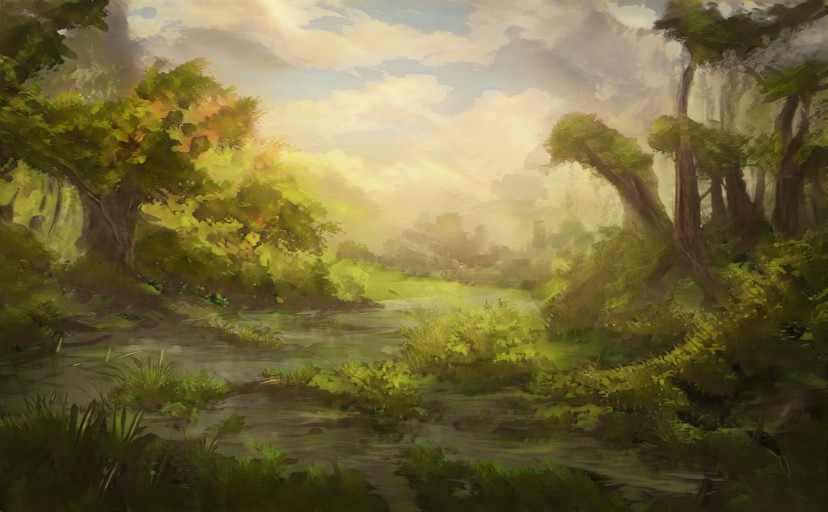
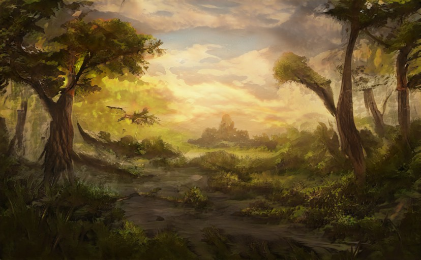

January the 29th
Entry #2: Reflections and Nightmares
04:00AM - Here are somethings you might want to know about The Principality of Alis is in another realm, it's a land of strange occurrences, where the children don't sleep and the birds don't chirp.
05:00AM - The Atlanteans are also in this world. You see, My husband and I first had this discussion over a year ago and he wanted me to write it out as a novel, instead of actually coming to the land with Rose, but I always declined. Then we both forgot about it.
06:00AM - We knew nothing about the gods and whether or not they were real or not. We still know nothing.
07:00AM - When Rose and I were 13 years old, we had a premonition that it was bad, but not knowing what was happening to us, I did nothing.
08:00AM - The following year our family left and the gods never found us.
But it wasn't until this past - oh, Rose just woke up.
10:00AM - Nothing is normal, neither are the creatures that dwell in the skies. There was a mystery surrounding the Principality of Alis, after three years, the evil presence that once resided there was gone, or so the citizens thought.
12:00PM - Rose said he dreamt of a woman screaming “the Prince of Alis was officially declared dead”. He also saw in his dream that a woman named Lorelei was now the new ruler of the Principality of Alis, and she has come to realize that the three - year reign of peace isn't long enough.
03:00PM - The tempers are starting to flare up, and the queen is missing. In my case it's only about zombies that don't sleep. But I don't need to explain why I'm here, I am his chosen tool. I will never fully understand why he chose me. All I know is that this is where I belong, I may not like it but this is my home now.
08:00PM - The orb was dangling from my hand and twirled around slowly. It was as if the orb was protecting it from harm, so I lifted the knife and cut the palm of my hand
09:00PM - Basically every possible thing to haunt a person is here, from hills of corpses, to the barrier between earth and another world, made of teeth.
11:00PM - The main characters of the game are a couple of spirits, who want to lead their descendants to another realm to fight the demons that have taken over the world. I look over at Rose and think about the demons. The game itself was fun, the same way everything else in Alis is fun, because you can manipulate spirits and throw them around, and find small pockets of safety and happiness.
Next Page  